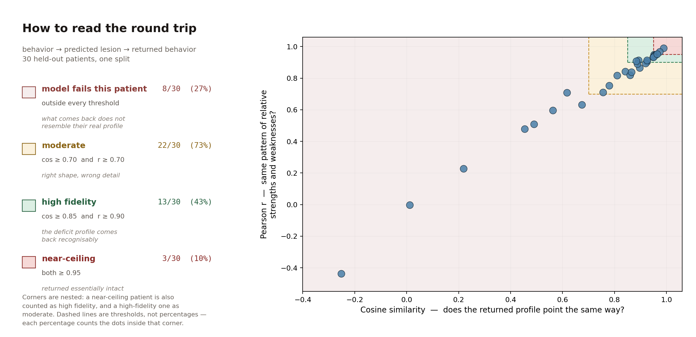

10 clinical composites · drag to set
15 best-predicted LH regions · proportion damaged
The round trip takes a patient's ten observed behavioral scores, predicts their fifteen lesion loads, feeds that predicted lesion back in, and reads ten behavioral scores out. It never touches their real lesion. Cosine similarity of 0.87 next to an R² of 0.21 looks contradictory. Three things explain it.
The dashed lines are thresholds, not percentages. Each pair marks off a corner of the plot, and the percentage counts how many of the 30 patients landed inside it. The corners are nested, so a near-ceiling patient is also counted as high fidelity, and a high-fidelity one as moderate.

Every dot is one held-out stroke patient. Nothing on this plot is an LLM — the BLUM benchmark that appears on the printed poster was a comparison number from a companion paper, with no corresponding mark, and has been dropped.
Returned profiles are shrunk to about 40% of observed length — median vector norm 1.20 against 2.98. That is regularization pulling predictions toward the mean. R² punishes it heavily; cosine, which measures only angle, cannot see it at all.
R² is per element, across patients: of the spread in WAB fluency across 296 people, how much do we capture? Cosine is per patient, across the ten measures: for this person, does the predicted profile point the same way? Getting the shape of a ten-dimensional profile roughly right is a far easier problem than getting each coordinate's magnitude right.
Both directions share the same five-dimensional latent space, so the return pass is not an independent lossy channel — it comes back through the door it went in.
| Comparison | median cosine |
|---|---|
| round-trip output vs rank-5 reconstruction of behavior by itself | 0.896 |
| rank-5 self-reconstruction vs observed | 0.992 |
| observed lesion vs predicted lesion — the lossy step | 0.453 |
Trivial baselines do not reproduce it, so the fidelity is not a severity artifact:
| Model | median cosine | high fidelity |
|---|---|---|
| round trip | 0.874 | 40.0% |
| same profile shape for everyone | 0.020 | 1.0% |
| severity only, flat profile | 0.340 | 0.0% |
| shuffled predictions | −0.070 | 7.0% |
Read the round trip as a consistency check, not an accuracy one: one parameter set, read in both directions, returns you to where you started. The accuracy figures are the held-out R²s — 0.21 behavior to lesion, 0.26 lesion to behavior.
| Element | Sign-weighted mean of |
|---|
| Component | Strongest loadings | Lesion var. |
|---|
Composites are hand-specified, not derived — the clinical picture is written into them. That is why the poster reports a refit with the composites removed: overall severity emerges either way and prediction is unchanged (inverse R² 0.278 → 0.270, forward 0.347 → 0.346). Component 1 carries most of the prediction; modes 2–5 add about 6.5% between them.